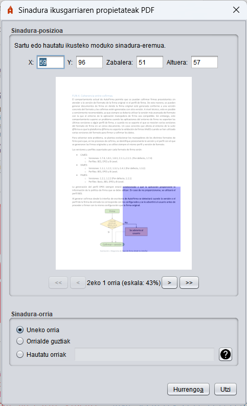
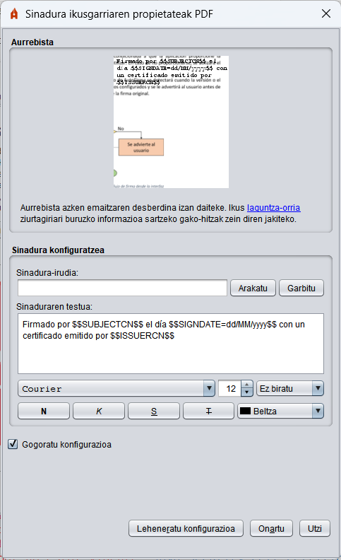
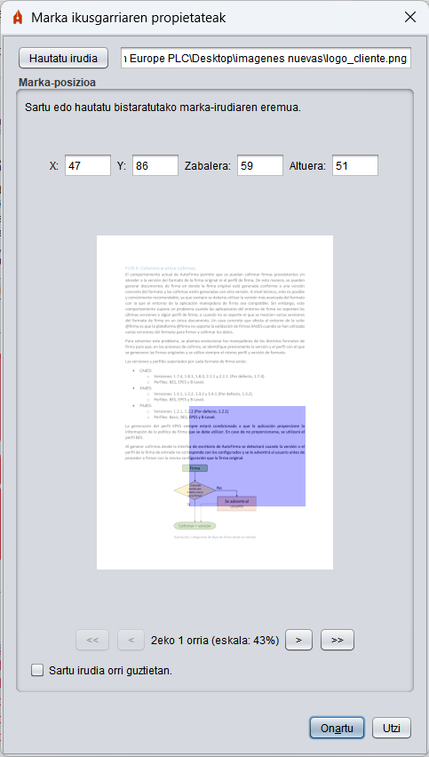

Ikus daitezkeen sinaduren propietateak PDF
PDF sinadura ikusgarriak sortzea gaituz gero, PAdES formatuan sinatuko duen PDFaren gainean sinatzeko eremu bat hautatzeko aukera emango zaio erabiltzaileari.

Menu honen bidez, sagua erabil dezakezu PDFko orrietako baten eremu angeluzuzena hautatzeko.
- X: Sinadura-eremuaren hasierako X ardatzeko pixel-kopurua.
- Eta: Sinadura-eremua hasten den Y ardatzeko pixel-kopurua.
- Zabalera: Sinadura-eremuan horizontalean zabaltzen den pixel-kopurua.
- Altuera: Sinadura-eremuan bertikalean zabaltzen den pixel-kopurua.
- (PDF orriaren aurrebista): Erabiltzaileak klik egin behar du, eta sagua arrastatu eremu horren gainean, ikus daitekeen sinadura-eremua hautatzeko. Sinadura-eremuaren posizioak eta tamaina pixeletan adierazten dira, orriaren irudia erakusten den eskalarekiko.
- <<: Bistaratzea PDFko lehen orrira eramateko botoia.
- <: Bistaratzea PDFaren aurreko orrira eramateko botoia. Teklatuko "ezkerreko kurtsorea" tekla sakatuta erreproduzi daiteke portaera hori.
- >: Bistaratzea PDFko hurrengo orrira eramateko botoia. Teklatuko "eskuineko kurtsorea" tekla sakatuta erreproduzi daiteke portaera hori. PDFko azken orrialdean baldin bagaude, aukera honek dokumentuaren amaieran orri zuri bat sortzeko aukera emango digu, eta bertan sinadura sartu ahal izango da.
- >>: Bistaratzea PDFko azken orrira eramateko botoia.
Leiho horretan bertan, behealdean, sinadura ikusgai zein orrialdetan agertu behar duen adieraz daiteke. Aukera hauek onartzen dira:
- Uneko orria: Ikusteko moduko sinadura goiko posizioaren hautatzailean hautatutako orrian agertuko da.
- Orrialde guztiak: Ageriko sinadura dokumentuaren orri guztietan agertuko da.
- Orrialdeak hautatzea: Aukera honetan, sinadura ikusgai agertuko den orria edo orri-tartea hauta daiteke. Sinadura ikusgai jartzeko orrialde bat edo gehiago adierazi nahi izanez gero, orri batetik bestera komak bereizita adieraz daiteke (1,4,7:
1., 4. eta 7. orrialdeetan estanpatzen da, edo orri-tarte bat adierazten da gidoi baten bidez (1-8: Orrialdeetan estanpatzen da, 1etik 8ra). Orrialdeak dokumentuaren amaieratik duten kokapenaren arabera ere adieraz daitezke. Horretarako, (-2 balio negatiboa duen posizioa erabiliko da: Sinadura azkenaurreko orrialdean estanpatuko du). Mekanismo horiek konbinatu egin daitezke. Adibidez:
- 3-6, 8, 10--1: Orri hauetan estanpatuko dela adierazten du: 3tik 6ra, 8an eta 10etik azken orrira.
Galdera-ikurra duen botoia (?) sinadura ikusgarrirako laguntza-orria irekitzeko.
Sinadura-eremua desagertu egingo da PDFaren pantaila aldatzean. Hautatu PDFa ikusteko moduan sinatzeko eremua, eta, ondoren, sakatu Hurrengoa botoia.
Ondoren, leiho berri bat agertuko da, eta erabiltzaileak sinaduraren itxura konfiguratu ahal izango du.

Interfaze horri esker, propietate hauek konfigura daitezke sinadura ikusgarrirako:
- Aurrebista. Irudi-fitxategia konfiguratzeko, sakatu sinaduraren aurrebista. Ez da onartzen gardenkiak dituen irudirik.
- Sinadura konfiguratzea:
- Sinaduraren irudia: Irudiaren bidea sinaduraren errubrikarekin. Arakatu botoiaren bidez hauta daiteke, eta Garbitu botoiaren bidez ezabatu. Irudian ez da gardenkiarik onartzen, eta, egonez gero, kendu egingo dira.
- Sinaduraren testua: PDFaren sinaduran erakutsi beharreko testua. Sinaduran erakutsi nahi den testua konfiguratzeko, gako-hitz batzuk erabil daitezke, eta, horien ordez, sinadura-ziurtagiriaren titularraren edo igorlearen testu egokiak erabil daitezke sinatzean. Hauek dira:
- $$SUBJECTCN$$
- Izen arrunta (CN, Common Name) sinadura-ziurtagiriaren titularraren X.500 nagusiaren barruan.
- $$ISSUERCN$$
- Izen arrunta (CN, Common Name) X.500 Sinadura-ziurtagiriaren jaulkitzailearen izen nagusiaren barruan.
- $$CERTSERIAL$$
- Sinadura-ziurtagiriaren serie-zenbakia.
- $$SIGNDATE=PATROIA$$
- Sinaduraren data; PATROk data zer formatutan bistaratu behar den adierazi behar du, Oracle-k Simple DateFormat klaserako definitutako eskemari jarraituz.
- $$GIVENNAME$$
- Ziurtagirian aitortutako titularraren izena (G, Given Name). Baliteke balio hori ziurtagirian ez agertzea; kasu horretan, patroiaren ordez kate hutsa erabiliko da.
- $$SURNAME$$
- Ziurtagirian aitortutako titularraren deiturak (SN, Surname). Baliteke balio hori ziurtagirian ez agertzea; kasu horretan, patroiaren ordez kate hutsa erabiliko da.
- $$ORGANIZATION$$
- Ziurtagirian aitortutako titularraren antolakuntza (O, Organization). Baliteke balio hori ziurtagirian ez agertzea; kasu horretan, patroiaren ordez kate hutsa erabiliko da.
- $$PSEUDONYM$$
- Ziurtagiriaren ezizena. Baliteke balio hori ziurtagirian ez agertzea; kasu horretan, patroiaren ordez kate hutsa erabiliko da.
- $$OU$$
- Ziurtagiriaren antolamendu-unitatea (OU, Organization Unit). Baliteke balio hori ziurtagirian ez agertzea; kasu horretan, patroiaren ordez kate hutsa erabiliko da.
- $$OUS$$
- Ziurtagiriaren antolamendu-unitateen zerrenda. Bat baino gehiago egonez gero, denak ", "-z bereizita aurkeztuko dira. Baliteke ziurtagiriak antolamendu-unitaterik definituta ez izatea; kasu horretan, ereduaren ordez kate hutsa erabiliko da.
- $$TITLE$$
- Ziurtagiriaren titularraren lanpostuari edo rolari buruzko informazioa. Baliteke balio hori ziurtagirian ez agertzea; kasu horretan, patroiaren ordez kate hutsa erabiliko da.
- $$REASON$$
- Horregatik sinatu da PDFa, sinatze-eragiketa "signatureReason" propietatearen bidez konfiguratuta. Balio hori ezarri ez bada, patroiaren ordez kate hutsa erabiliko da.
- $$LOCATION$$
- PDFa sinatzen den hiria, sinatze-eragiketa "signatureProductionCity" propietatearen bidez konfiguratuta. Balio hori ezarri ez bada, patroiaren ordez kate hutsa erabiliko da.
- $$CONTACT$$
- PDFaren sinatzailearen harremanetarako informazioa, sinatze-eragiketa "signatureContact" propietatearen bidez konfiguratuta. Balio hori ezarri ez bada, patroiaren ordez kate hutsa erabiliko da.
- Testuari formatu-aukera hauek aplika dakizkioke:
- Letra-iturria.
- Letra-tamaina.
- Testuaren errotazioa.
- Letra-estiloa (lodia, etzana, azpimarratua edo marratua).
- Testuaren kolorea.
"Gogoratu konfigurazioa" laukian, ezarritako konfigurazioa (testua, irudia eta estiloak) gorde daiteke, sinadura hauetan erabiltzeko. "Lehenetsitako konfigurazioa leheneratu" botoiak panelaren konfigurazioa lehenetsitako balioetara itzuliko du.
PDFari sinadura ikusgarririk gehitu nahi ez badiozu, sinaduraren pantailan sinatu botoia sakatu aurretik, ziurtatu ez dagoela hautatuta "Egin sinadura ikusgai PDFaren barruan" laukia.
Ikus daitezkeen marken propietateak
PDFan marka ikusgarriak sartzea gaituz gero, erabiltzaileari eremu bat hautatzeko aukera emango zaio sinatu behar duen PDFan.

Menu honen bidez, sagua erabil dezakezu PDFko orrialde batean edo guztietan eremu angeluzuzena hautatzeko.
- Hautatu irudia: Botoi hau sakatzean, leiho bat irekiko da, eta markaren irudia hautatu ahal izango duzu. Irudian ez da gardenkiarik onartzen, eta ez dira agertuko baldin eta
- X: Marka kokatzeko X ardatzean dagoen pixel-kopurua.
- Eta: Marka kokatzeko Y ardatzean dagoen pixel-kopurua.
- Zabalera: Marka horizontalean zabaldu behar den pixel-kopurua.
- Altuera: Marka bertikalean zabaldu behar den pixel-kopurua.
- (PDF orriaren aurrebista): Erabiltzaileak klik egin behar du modu iraunkorrean, eta sagua arrastatu eremu horren gainean, marka jarriko den eremua hautatzeko.
- <<: Bistaratzea PDFko lehen orrira eramateko botoia.
- <: Bistaratzea PDFaren aurreko orrira eramateko botoia. Teklatuko "ezkerreko kurtsorea" tekla sakatuta erreproduzi daiteke portaera hori.
- >: Bistaratzea PDFko hurrengo orrira eramateko botoia. Teklatuko "eskuineko kurtsorea" tekla sakatuta erreproduzi daiteke portaera hori.
- >>: Bistaratzea PDFko azken orrira eramateko botoia.
- Sartu irudia orrialde guztietan: Marka PDFko orri guztietan sartzea hautatzeko laukia.
Markaren eremua desagertu egingo da PDFaren orrialdea aldatzean. Hautatu orrialdea, irudia eta eremua PDFan ikus daitekeen markarako, eta, ondoren, sakatu Ados botoia.
PDFan ageriko markarik gehitu nahi ez baduzu, sinadura-pantailan sinatu botoia sakatu aurretik, ziurtatu ez dagoela hautatuta "Txertatu marka ikusgai bat PDFan" laukia.